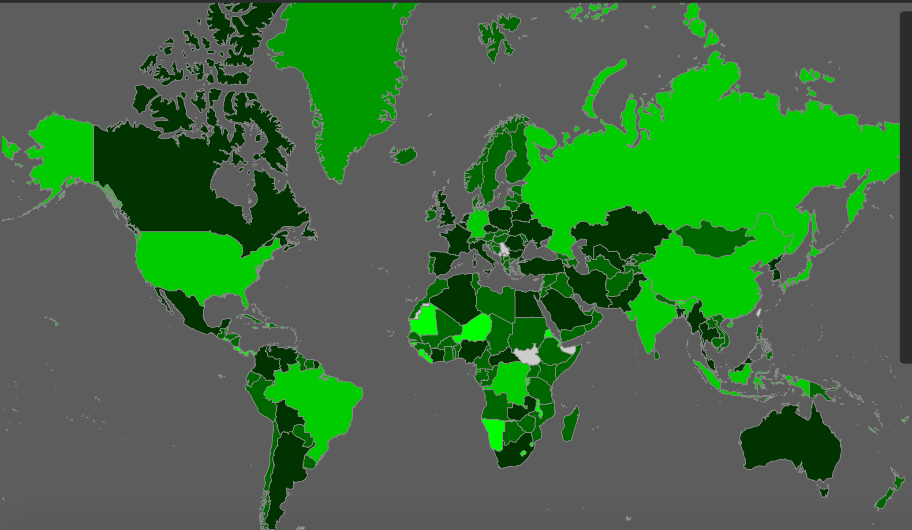

<div class="cover" id="cover">
  <div class="over-cover">
    <div class="arrow_box"></div>
    <div class="box">
        Start Here
    </div>
  </div>
</div>
<div>
  
</div>
<div class=top-bar>
  <div class="inner-bar">
      <header>THE GREENHOUSE GAS CRISIS</header>
      <div class="sub-header">A comprehensive look at greenhouse gas emissions by country from 1990 to 2012</div>
    <div style="margin-left: 264px;margin-top: -24px" class="slider">
      <label for="year" class="year">1990</label>
      <input type="range" id="slider" style="border-radius:2px;">
      <p class="year-label" id="year" style="margin-left:242px; margin-top:-16px;"></p>
    </div>
  </div>
  <div class="range">
    <div id="minimum"></div>
    <div class="gradient"></div>
    <div id="maximum"></div>
  </div>
</div>


<svg id="main" height=650 width=100% style="margin-left: 2px; margin-top:50px;"></svg>

<div class="sidebar">
  <div class="country-info">
    <div id="click">
      Click on a country to see data
    </div>
    <p class="sub-header" id="title">Country</p>
    <p id="Name" style="color:lightgrey; font-size:13px; margin-top:5px">
    </p>
    <p class="sub-header" id="title1">Country Code</p>
    <p id="code" style="color:lightgrey; font-size:13px; margin-top:5px">
    </p>
    <p class="sub-header" id="title2">Data by Year</p>
    <p id="data" style="color:lightgrey; font-size:13px; margin-top:5px">
    </p>
  </div>
</div>

<script src="https://d3js.org/d3-axis.v1.min.js"></script>
<script src="https://d3js.org/topojson.v2.min.js"></script>

<script>

// ------------
//    Parse
// ------------

	var years = [];
  var year;
	d3.csv("greenhouse.csv", function(error, parsed){

		for (var key in parsed[0]) {
			var num = parseFloat(key.split(" ")[0]);
			if (!isNaN(num)){
			  years.push(num);
			}
		}

		firstYear = d3.min(years);
		d3.select("#slider")
			.attr("min", d3.min(years))
			.attr("max", 2012) //d3.max(years))
			.attr("value", d3.min(years));

	});


	var RANGE = [100000000, -100000000];
	var AllData = {};
	var firstYear;
  var countryName = [];
  var yearlyData = [];
  var width = 900, height = 500;


	d3.csv("greenhouse.csv", function(error, parsed){


		parsed.forEach(function(row, index){

      var yearData = {};

			if(!row["Country Name"])return false;
			//if(index>7)return false;
      if(row["Country Name"])
        countryName.push(row["Country Name"]);


			var ii = 0;
			for (var key in row) {
				if ( ii >= 4) {
					var pollution = Number(row[key]);

					if(isNaN(pollution))pollution = null;
					yearlyData.push(pollution);

          yearData[key.split(" ")[0]] = pollution;


					if(pollution){
						if(pollution < RANGE[0]) RANGE[0] = pollution;
						if(pollution > RANGE[1]) RANGE[1] = pollution;

						RANGE[1] = Math.min(1000000, RANGE[1]);

            document.getElementById('minimum').innerHTML = RANGE[0];
            document.getElementById('maximum').innerHTML = RANGE[1] + " kt of CO2";

					}

					if(ii == 11){
						yearlyData.push(null);
						yearlyData.push(null);
					}
					if(ii == 12)yearlyData.push(null);
				}
				ii += 1;

			}

			AllData[row['Country Code']] = {name: row['Country Name'], years: yearData, code: row['Country Code']};

		});

	});

  var sliderValue = document.getElementById("year");

	d3.select("#slider")
		.on("input", function(){
			DrawCountries(this.value);
      sliderValue.innerHTML = this.value;
	   })
     .on("click", function(){
       document.getElementById('cover').style.display = "none";
       document.getElementById('background').style.display = "none";
     });


// -------------
//      Draw
// --------------

var colours = ["#00ff00", "#00cc00", "#009900", "#006600", "#003300", "#000000"];


var DrawCountries = function(y){
	if(!AllData)return console.error("Data not defined yet; cannot draw");

	year = y;


	// -- Begin Circles
		var svg = d3.select("svg")
		var circle = svg.selectAll("circle").data(AllData);
    var g = svg.append("g");
		var enter = circle.enter().append("circle")
      .attr("width","100%");
		var cx = function(d, i) {        return 30 + (30*(i%25));      };
		var cy = function(d, i) {        return 30 + (30 * Math.floor(i/25))      };
		var color = d3.scaleOrdinal()
						  .domain([0,6])
						  .range(colours);


    d3.json("world.json", function(error, data){

    // converts Topojson to GeoJSON
    // make sure to use the right key in data.objects!
    var featureCollection = topojson.feature(data, data.objects.countries);


    // filter out countries using id!
    featureCollection.features = featureCollection.features.filter(function(d) {
      return d.id != "010";

    });

    var width  = 1020;
    var height = 845;
    // initializes a map projection
    // projection types: https://github.com/d3/d3-geo#azimuthal-projections
    var proj = d3.geoMercator()
        .fitSize([width, height], featureCollection)
        .scale(165)
        .translate([width/2, height/2]);

    // creates a path generator
    var path = d3.geoPath()
      .projection(proj);

    var countries = svg.selectAll("path")
      .data(featureCollection.features);

    var num2alpha = {"100":"BGR","104":"MMR","108":"BDI","112":"BLR","116":"KHM","120":"CMR","124":"CAN","129":"XXA","132":"CPV","136":"CYM","140":"CAF","144":"LKA","148":"TCD","152":"CHL","156":"CHN","158":"TWN","162":"CXR","166":"CCK","170":"COL","174":"COM","175":"MYT","178":"COG","180":"COD","184":"COK","188":"CRI","191":"HRV","192":"CUB","196":"CYP","203":"CZE","204":"BEN","208":"DNK","212":"DMA","214":"DOM","218":"ECU","221":"XXA","222":"SLV","226":"GNQ","231":"ETH","232":"ERI","233":"EST","234":"FRO","238":"FLK","239":"SGS","242":"FJI","246":"FIN","250":"FRA","254":"GUF","258":"PYF","260":"ATF","262":"DJI","266":"GAB","268":"GEO","270":"GMB","275":"PSE","276":"DEU","278":"DDR","280":"FDR","288":"GHA","290":"XXB","292":"GIB","296":"KIR","300":"GRC","304":"GRL","308":"GRD","312":"GLP","316":"GUM","320":"GTM","324":"GIN","328":"GUY","332":"HTI","334":"HMD","336":"VAT","340":"HND","344":"HKG","348":"HUN","352":"ISL","360":"IDN","364":"IRN","368":"IRQ","372":"IRL","376":"ISR","380":"ITA","384":"CIV","388":"JAM","392":"JPN","398":"KAZ","400":"JOR","404":"KEN","408":"PRK","410":"KOR","412":"KSV","414":"KWT","417":"KGZ","418":"LAO","422":"LBN","426":"LSO","428":"LVA","430":"LBR","434":"LBY","438":"LIE","440":"LTU","442":"LUX","446":"MAC","450":"MDG","454":"MWI","458":"MYS","462":"MDV","466":"MLI","470":"MLT","471":"XXB","473":"XXA","474":"MTQ","478":"MRT","480":"MUS","484":"MEX","488":"MID","490":"XXB","492":"XXB","496":"MNG","498":"MDA","499":"MNE","500":"MSR","504":"MAR","508":"MOZ","512":"OMN","516":"NAM","520":"NRU","524":"NPL","527":"XXA","528":"NLD","530":"ANT","531":"CUW","532":"NAA","533":"ABW","534":"MAF","535":"BES","536":"XXE","540":"NCL","548":"VUT","554":"NZL","558":"NIC","562":"NER","566":"NGA","568":"XXC","570":"NIU","574":"NFK","577":"XXA","578":"NOR","580":"MNP","581":"XXB","582":"PCI","583":"FSM","584":"MHL","585":"PLW","586":"PAK","591":"PAN","592":"PCZ","598":"PNG","600":"PRY","604":"PER","608":"PHL","612":"PCN","616":"POL","620":"PRT","624":"GNB","626":"TLS","630":"PRI","634":"QAT","636":"XXC","637":"XXD","638":"REU","642":"ROU","643":"RUS","646":"RWA","652":"BLM","654":"SHN","658":"KNA","660":"AIA","662":"LCA","666":"SPM","670":"VCT","674":"SMR","678":"STP","682":"SAU","686":"SEN","688":"SRB","690":"SYC","694":"SLE","697":"XXD","356":"IND","702":"SGP","703":"SVK","704":"VNM","705":"SVN","706":"SOM","710":"ZAF","716":"ZWE","720":"YMD","724":"ESP","728":"SSD","729":"SDN","732":"ESH","740":"SUR","744":"SJM","748":"SWZ","752":"SWE","756":"CHE","760":"SYR","762":"TJK","764":"THA","768":"TGO","772":"TKL","776":"TON","780":"TTO","784":"ARE","788":"TUN","792":"TUR","795":"TKM","796":"TCA","798":"TUV","800":"UGA","804":"UKR","807":"MKD","810":"SUN","818":"EGY","826":"GBR","833":"IMN","834":"TZA","837":"XXG","838":"XXF","839":"XXI","840":"USA","850":"VIR","854":"BFA","858":"URY","860":"UZB","862":"VEN","872":"WAK","876":"WLF","879":"XXA","882":"WSM","886":"YAR","887":"YEM","890":"YUG","894":"ZMB","899":"XXH","024":"AGO","072":"BWA","012":"DZA","010":"ATA","074":"BVT","080":"XXA","004":"AFG","051":"ARM","031":"AZE","050":"BGD","048":"BHR","096":"BRN","064":"BTN","086":"IOT","008":"ALB","020":"AND","040":"AUT","056":"BEL","070":"BIH","058":"BLX","028":"ATG","044":"BHS","084":"BLZ","060":"BMU","052":"BRB","092":"VGB","016":"ASM","036":"AUS","090":"SLB","032":"ARG","068":"BOL","076":"BRA", "180":"ZAR"};

    function getCircleColor(d){

      var countryCode = num2alpha[d.id];
      var greenhouseData = AllData[countryCode];


    // -- Get pollution

      if(!greenhouseData){
        // console.log(d.id);
        return "#cccccc";

      }
      // console.log(year, greenhouseData.years);
      var pollution = greenhouseData.years[year];

      if(!pollution)return "#cccccc";

          // -- Get Log Value And Color
      var logValue = Math.floor(Math.log10(pollution));
            // console.log("pollution: ", pollution, 'log: ', logValue);
      return color(logValue);

          // -- Alternative Color Test
            /*var percent = logValue/6;
            var color = "rgba("+Math.round(percent*255)+",0,0)";
            return color;*/
    }


    // country codes: https://en.wikipedia.org/wiki/ISO_3166-1_numeric
    countries.enter().append("path")
      .attr("d", path)
      .attr("stroke", "#888")
      .attr("stroke-width", 1)
      .attr("fill", getCircleColor)
      .attr("class", function(d){
        return AllData[name];
      })
      .on("click", function(d) {
        var countryCode = num2alpha[d.id];
        var greenhouseData = AllData[countryCode];
        var countryData = JSON.stringify(greenhouseData.years);
        function print(){
          var printThis;
            for(var i = 0; i < 48; i++){
              printThis = "\n" + greenhouseData.years[i];
            }
            return printThis; // <-- to be printed to the div
          }
        console.log("click");
        document.getElementById('click').innerHTML = " ";
        document.getElementById('Name').innerHTML = greenhouseData.name;
        document.getElementById('code').innerHTML = greenhouseData.code;
        document.getElementById('data').innerHTML = print();
        document.getElementById('title').style.display = "block";
        document.getElementById('title1').style.display = "block";
        document.getElementById('title2').style.display = "block";

      });


      countries.transition()
       .duration(500)
       .attr("fill", getCircleColor);


});


	// -- Find Circle Color


};


/*
Notes...

var pollution;


1 - 10,000 = blue
10,000 - 100,000 = green
100,000 - 1,000,000 = orange
1,000,000 - 10,000,000 = red
10,000,000 - 100,000,000 = black

*/

</script>
